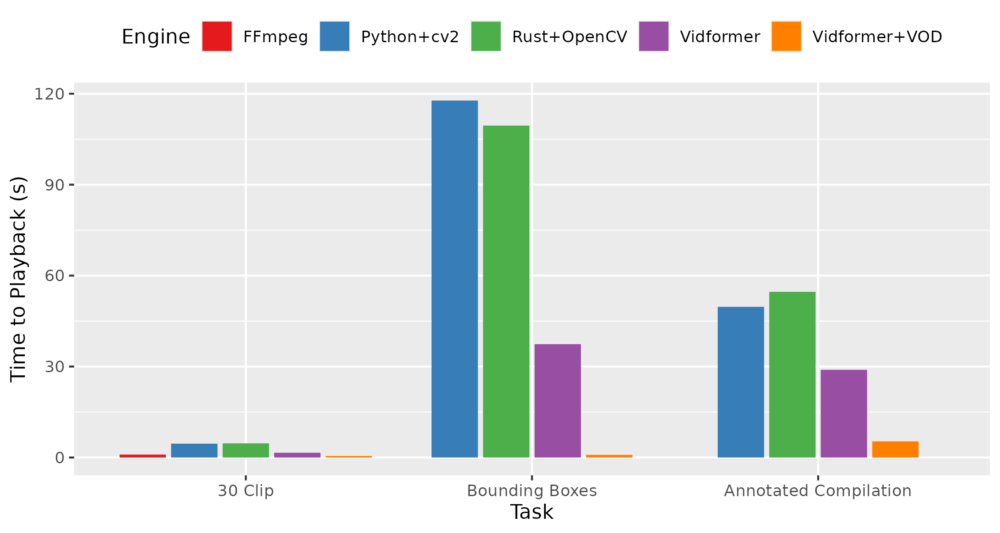

vidformer


A research project providing infrastructure for video-native interfaces and accelerating computer vision visualization. Developed by the OSU Interactive Data Systems Lab.
🎯 Why vidformer
Vidformer efficiently transforms videos, enabling faster annotation, editing, and processing of video data—without having to focus on performance.
It uses a declarative specification format to represent transformations. This enables:
-
Transparent Optimization: Vidformer optimizes the execution of declarative specifications just like a relational database optimizes relational queries.
-
Lazy/Deferred Execution: Video results can be retrieved on-demand, allowing for practically instantaneous playback of video results.
Vidformer usually renders videos 2-3x faster than cv2, and hundreds of times faster when serving videos on-demand.

Vidformer builds on open technologies you may already use:
- OpenCV: A
cv2-compatible interface ensures both you (and LLMs) can use existing knowlege and code. - Supervision: Supervision-compatible annotators make visualizing computer vision models trivial.
- FFmpeg: Built on the same libraries, codecs, and formats that run the world.
- Jupyter: View transformed videos instantly right in your notebook.
- HTTP Live Streaming (HLS): Serve transformed videos over a network directly into any media player.
- Apache OpenDAL: Access source videos no matter where they are stored.
🚀 Quick Start

The easiest way to get started is using vidformer's cv2 frontend, which allows most Python OpenCV visualization scripts to replace import cv2 with import vidformer.cv2 as cv2:
import vidformer.cv2 as cv2
cap = cv2.VideoCapture("my_input.mp4")
fps = cap.get(cv2.CAP_PROP_FPS)
width = int(cap.get(cv2.CAP_PROP_FRAME_WIDTH))
height = int(cap.get(cv2.CAP_PROP_FRAME_HEIGHT))
out = cv2.VideoWriter("my_output.mp4", cv2.VideoWriter_fourcc(*"mp4v"),
fps, (width, height))
while True:
ret, frame = cap.read()
if not ret:
break
cv2.putText(frame, "Hello, World!", (100, 100), cv2.FONT_HERSHEY_SIMPLEX,
1, (255, 0, 0), 1)
out.write(frame)
cap.release()
out.release()
You can find details on this in our Getting Started Guide.
📘 Documentation
About the project
File Layout:
- ./vidformer: The core transformation library
- ./vidformer-py: A Python video editing client
- ./vidformer-cli: A command-line interface
- ./vidformer-igni: The second generation vidformer server
- ./snake-pit: The main vidformer test suite
- ./docs: The vidformer website
Vidformer components are detailed here.
❌ vidformer is NOT:
- A conventional video editor (like Premiere Pro or Final Cut)
- A video database/VDBMS
- A natural language query interface for video
- A computer vision library (like OpenCV)
- A computer vision AI model (like CLIP or Yolo)
However, vidformer is strongly complementary to each of these. If you're working on any of the later four, vidformer may be for you.
License: Vidformer is open source under Apache-2.0. Contributions are welcome.
Acknowledgements: Vidformer is supported by the U.S. National Science Foundation under Awards #2118240 and #1910356.